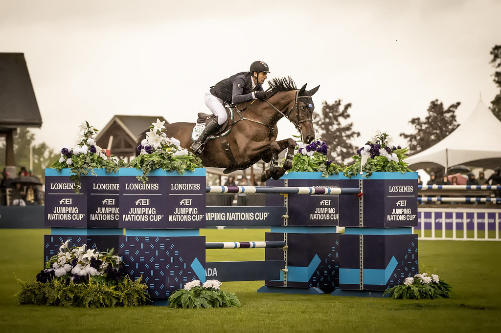

Rowan Willis se impone con Cape Town en la Friends of the Meadows Cup del CSI5* Spruce Meadows
El jinete australiano Rowan Willis se llevó este jueves la Friends of the Meadows Cup, prueba de 1,45 metros puntuable para el ranking mundial del CSI5* Spruce Meadows National, en Calgary. Willis detuvo el crono en 65,87 segundos a lomos de Cape Town, sin penalización, en una jornada de viento exigente en el ring…

Uso editorial
El jinete australiano Rowan Willis se llevó este jueves la Friends of the Meadows Cup, prueba de 1,45 metros puntuable para el ranking mundial del CSI5* Spruce Meadows National, en Calgary. Willis detuvo el crono en 65,87 segundos a lomos de Cape Town, sin penalización, en una jornada de viento exigente en el ring principal del recinto canadiense.
El podio quedó completado por el colombiano John Pérez Bohm, segundo con Aztlán en 66,84 segundos, también con recorrido limpio, y por el canadiense Sean Jobin, que cerró el cajón con Grande Dame DK en 68,29 segundos sin faltas. Los tres primeros encadenaron recorridos perfectos y resolvieron el trazado por debajo de los 70 segundos, en una prueba marcada por el ritmo alto que impuso el ganador desde la salida.
La Friends of the Meadows Cup forma parte del bloque de pruebas Ranking del Spruce Meadows National, una de las cuatro citas mayores del verano del recinto canadiense, y puntúa para el Longines Ranking Group. Spruce Meadows mantiene este programa CSI5* hasta el domingo, con los grandes premios del fin de semana programados para el sábado y el cierre dominical.
Mejor español: 39º Juan Manuel Gallego con Lloyd (un derribo, 83,79 segundos).
— Redacción de Hípica al Día